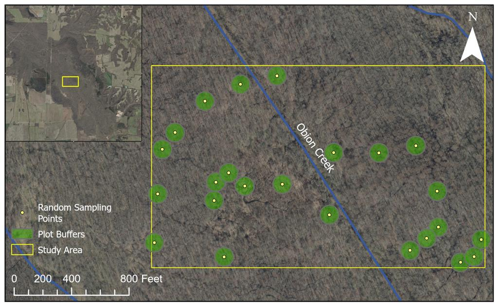
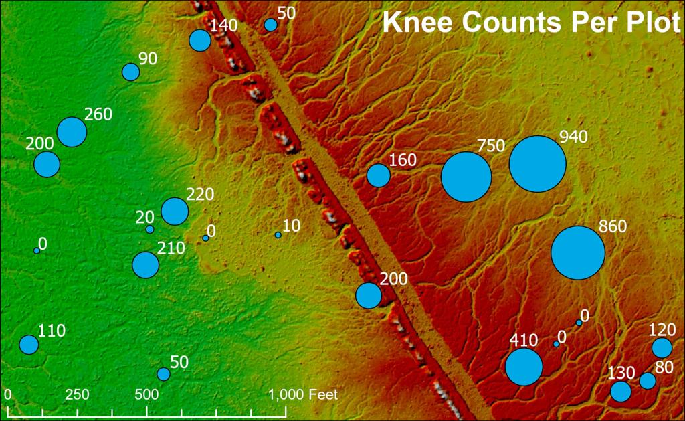
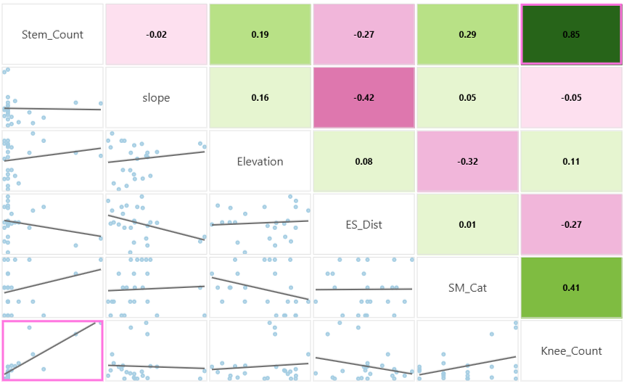

Project
Environmental Drivers of Bald Cypress Knee Density Across a Wetland Landscape
Abstract
Bald cypress (Taxodium distichum) produces distinctive woody root projections known as “knees,” whose function remains poorly understood. This study investigates how fine-scale topographic and hydrologic variation influences knee density in a bottomland hardwood wetland in western Kentucky.
Field sampling was conducted at 24 plots, recording knee count, stem count, soil moisture, and basic site characteristics. Terrain variables, including elevation, slope, and proximity to ephemeral streams, were derived from a 2-ft resolution LiDAR-based Digital Elevation Model. Generalized linear regression models were used to assess relationships between environmental conditions and knee density.
Soil moisture consistently emerged as the most influential predictor across all models, while stream proximity and slope displayed ecologically meaningful but statistically non-significant trends. The strongest knee densities were observed in saturated, low-relief zones near minor drainage features. These findings suggest that localized hydrologic conditions, particularly surface saturation, play a key role in shaping bald cypress knee distribution. Results can inform future wetland restoration and management strategies by emphasizing the importance of moisture retention and microtopographic complexity.
Project Details
Maps and Figures


